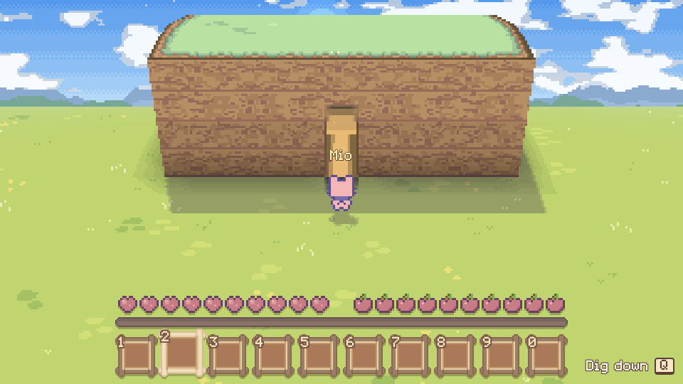

2026-11-25
What's new: creatures, a new sky, and bridges in the air
Here is what changed in the game over the last two days. It is all live now: play it.
New creatures
- Gustling. Rare, and only by day. It drifts up to whoever is holding something, spins up, then grabs up to five of it and runs. Hit it while it spins and it drops everything.
- Grumblestump. By day it is a stump with its eyes shut. At night it shuffles after you, raises its arms and slams the ground. Everyone within two tiles gets hit, so step back when you see the arms go up.
- Snapbloom. Rare, by day. It creeps up, rears back, and bites if you are still beside it. At night it is just a flower.
- The hob, on your side. Make one at a workbench (8 stone and a campfire) and set it down. It follows you for good. When a wild creature comes close it hunches, then its firebox bursts: every wild thing near it is burnt and runs. It never hurts a person or an animal.
Every creature also has its own sounds now: a warning before it acts, a blow, a cry. If you hear one, look up.
The sky and the view
- A new sky: a sun with pixel rays, a moon that goes through its phases day by day, stars and a faint milky band at night.
- View distance is now a slider, from 9 to 65 tiles, in the Picture settings.
- New music: *Slow Tide* plays in the morning, and *Bright Dream* joins the daytime pieces. A piece no longer repeats for twenty minutes.
Under the ground
- The land is earth on top and stone underneath, the same everywhere, so you know what a dig will give.
- In a cave you see the whole cave, every branch of it, not just a circle round you.
- A cave keeps the real colours of its blocks, and its mouth casts a soft shadow inside.
- No more dark border along cliff tops and the rims of holes.
Jumping, falling, swimming
- Running up a flight of steps, each automatic jump clears the next step instead of hitting its face.
- Walking off a high ledge is one smooth fall, into water and inside a low tunnel too.
- When a fall hurts, you see it the moment you land, not a second later.
- Let go of the key while swimming and you glide into place at swimming pace, not at a run.
Bridges in the air
With earth or stone in hand, aim past a cliff's edge or over a hole and press E: the block goes in at your own level, not down at the bottom. Step onto it, place the next one, and you have a bridge straight out through the air.
Always the latest version
If your browser kept an old copy of the game from before an update, the page now notices and loads the new version by itself.

A hill with a cave mouth in it, by day